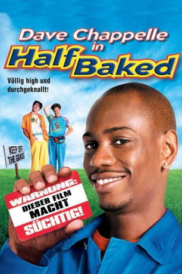

#12215 Half Baked: Völlig high und durchgeknallt
Alternativ: Half Baked (Englischer Titel)
 
 IMDB-Wertung: 6.7 / 10
IMDB-Wertung: 6.7 / 10  Tomatometer: 29
Tomatometer: 29  Metascore: 16
Metascore: 16 
Thurgood und seine Freunde Brian und Scarface dealen mit medizinischem Marihuana, um ihren Kumpel Kenny aus dem Gefängnis freikaufen zu können. Der hatte zuvor aus Versehen ein an Diabetes leidendes Polizeipferd mit Süßigkeiten getötet. Die Jungs klauen das Marihuana aus dem Labor, in dem Thurgood als Putzkraft arbeitet. Sie gründen die Firma Mr. Nice Guy und verkaufen die Droge, die bei ihren Abnehmern einschlägt wie eine Bombe. Thurgoods Leben gerät in einige Turbulenzen, als seine gegen Drogen engagierte Freundin Mary Joanna herausfindet, dass er für Mr. Nice Guy arbeitet. Bald ist auch das Leben der anderen in Gefahr, als der lokale Drogendealer Samson Simpson bemerkt, dass Mr. Nice Guy sein Geschäft ruiniert.
Jahr: 1998
Dauer: 82 Minuten
FSK: 16
Land: USA Studio: Universal PicturesTonspuren: DD2.0 - ,
Untertitel:
Auflösung: 720p (1280x688) Größe: 4556 MB
Genre: Komödie, Krimi
Regisseur: Tamra Davis
Drehbuch: Dave Chappelle, Neal Brennan
Soundtrack: Alf Clausen
Darsteller:
 Dave Chappelle als Thurgood Jenkins / Sir Smoke-a-Lot
Dave Chappelle als Thurgood Jenkins / Sir Smoke-a-Lot- Guillermo Díaz als Scarface
- Jim Breuer als Brian
 Harland Williams als Kenny Davis
Harland Williams als Kenny Davis- Rachel True als Mary Jane Potman
 Clarence Williams III als Samson Simpson
Clarence Williams III als Samson Simpson- Laura Silverman als Jan
 Tommy Chong als Squirrel Master
Tommy Chong als Squirrel Master- Gregg Rogell als Pothead
- Kevin Brennan als Pothead
- David Bluestein als Jerry Garcia
- Neal Brennan als Employee
- Karen Waddell als Record Store Customer
- Mark Henriques als Delivery Guy
- David Mucci als Horse Cop
 Kevin Rushton als Inmate
Kevin Rushton als Inmate- Paul James Saunders als Doorman
- Kyrin Hall als Henchwoman
- Joanna Bacalso als Henchwoman
- C.J. Lusby als Henchwoman
- Angelica Lisk-Hann als Henchwoman
- Jacqueline Anderson als Henchwoman Delilah
 Ho Chow als Hot Dog Vendor
Ho Chow als Hot Dog Vendor Jon Stewart als Enhancement Smoker
Jon Stewart als Enhancement Smoker Snoop Dogg als Scavenger Smoker
Snoop Dogg als Scavenger Smoker Stephen Baldwin als McGayver Smoker
Stephen Baldwin als McGayver Smoker- Marc Cohen als McGayver Friend
 Tracy Morgan als V.J.
Tracy Morgan als V.J. Paulino Nunes als SWAT Cop
Paulino Nunes als SWAT Cop Jason Blicker als Detective
Jason Blicker als Detective- Sharon Brown als Talking Joint
- David Sutcliffe als After School Dad
- Daniel DeSanto als After School Son
 Willie Nelson als Historian Smoker
Willie Nelson als Historian Smoker Janeane Garofalo als I'm Only Creative When I Smoke Smoker (uncredited)
Janeane Garofalo als I'm Only Creative When I Smoke Smoker (uncredited)- Carson Manning als Man at Bar (uncredited)
- Angelo Renai als Prisoner (uncredited)
- Bob Saget als Cocaine Addict (uncredited)
 Steven Wright als The Guy on the Couch (uncredited)
Steven Wright als The Guy on the Couch (uncredited)- R.D. Reid als Scientist
- Alice Poon als Supply Clerk
- Rick Demas als Nasty Nate
- Kevin Duhaney als Young Thurgood
- Matthew Raposo als Young Scarface
- James Cooper als Young Brian
- Michael Colton als Young Kenny
- Paul Brogren als Burger Customer
- Vincent Marino als Bodega Man
- Domencio 'Macio' Parrilla als Rasta Man
- Marcus Burrowes als Rasta Man
Datei: X:\1998\Half Baked Völlig high und durchgeknallt (1998, FSK16, 1280x688).mkv seit 30.12.2019
Festplatte: Gemischt-01+Anime
 Es gibt insgesamt 86 Filme in der Gruppe '1998'
Es gibt insgesamt 86 Filme in der Gruppe '1998'